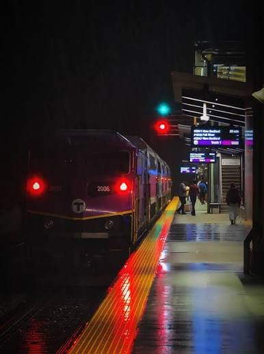
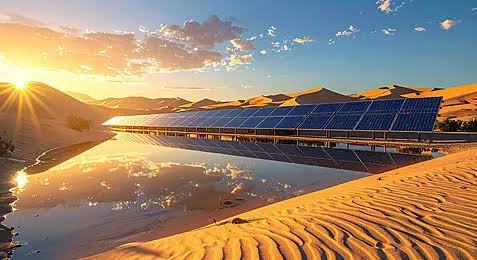
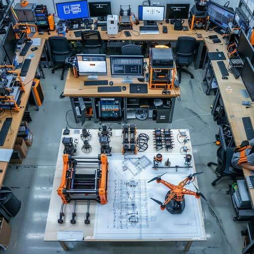
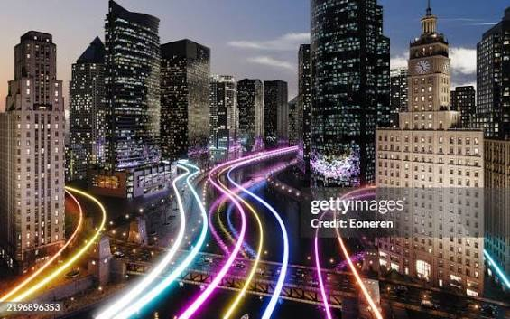

DIRECTORY // 04 DIVISIONS
SDG 9 SECTORS.
Select a sector below to inspect Philippine innovation and infrastructure programs.



Select a sector below to inspect Philippine innovation and infrastructure programs.



